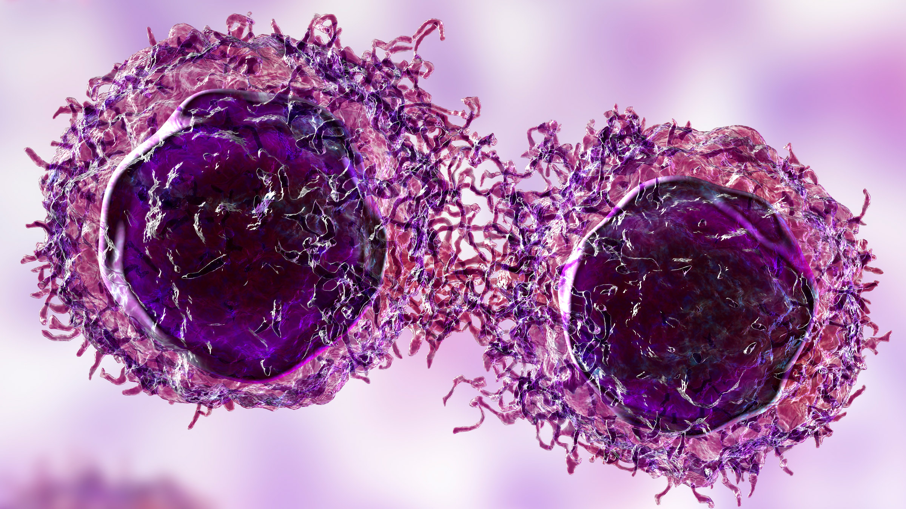
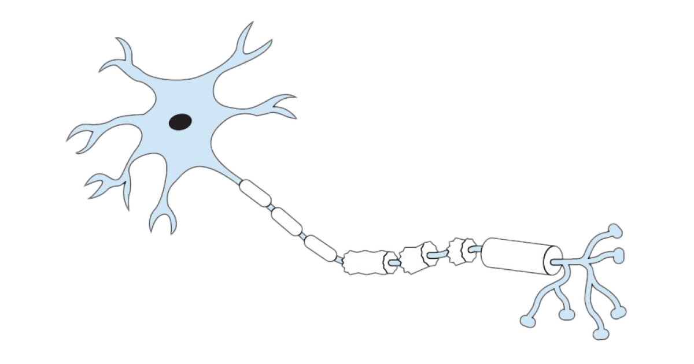
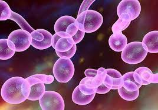
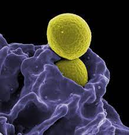

RESEARCH AREAS
Cancer

Cancer is a pervasive and devastating disease caused by the uncontrollable proliferation of abnormal cells in the body. Its origins are diverse, including genetic and environmental factors. Early diagnosis and treatment are vital for improved outcomes. Ongoing research and prevention efforts, along with advancements in treatment, offer hope in the fight against this widespread and challenging illness.
READ MORE
Genetics
Genetics is the study of heredity and the variation of characteristics in living organisms. It explores how genes, the DNA segments, determine traits and traits' passage from one generation to the next. Genetic research has profound implications for medicine, evolution, and understanding our biological diversity."Genetics is the study of heredity, genes, DNA, and their impact on our biological inheritance and diversity."
READ MORE
Nervous System

The nervous system, comprising the central (brain and spinal cord) and peripheral (body nerves) systems, coordinates bodily functions through electrical impulses and cell communication, managing sensory input, motor responses, and cognitive functions, enabling internal communication."
Read More
MicroBiology

Microbiology is the scientific study of microorganisms, including bacteria, viruses, fungi, and protozoa. It investigates their structure, function, genetics, and ecological roles. Microbes play crucial roles in disease, biotechnology, and environmental processes. Microbiology underpins medical advancements, biotechnology, and the understanding of complex ecosystems, making it a pivotal scientific field.
Read More
Immunology

Immunology is the branch of biology that explores the body's immune system, focusing on its defense mechanisms against infections and diseases. It delves into the complex interactions of antibodies, white blood cells, and immune responses. Immunology is vital in vaccine development, organ transplantation, and understanding autoimmune disorders, offering insights into human health and immunity.
Read More
Drug Development
Drug development is a multifaceted process involving the discovery, testing, and approval of new medications for various medical conditions. It typically encompasses drug discovery, preclinical testing, clinical trials, and regulatory approval. It demands rigorous research, safety assessments, and clinical efficacy evaluations. Successful drug development leads to improved treatments and healthcare solutions.
Read More